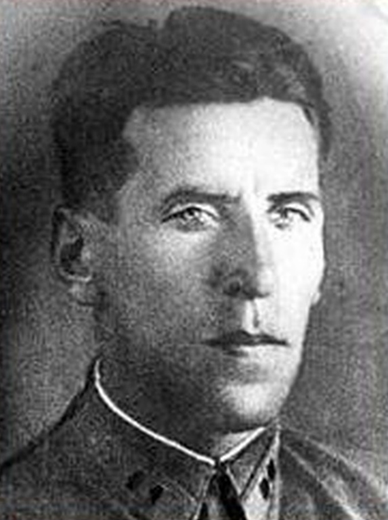
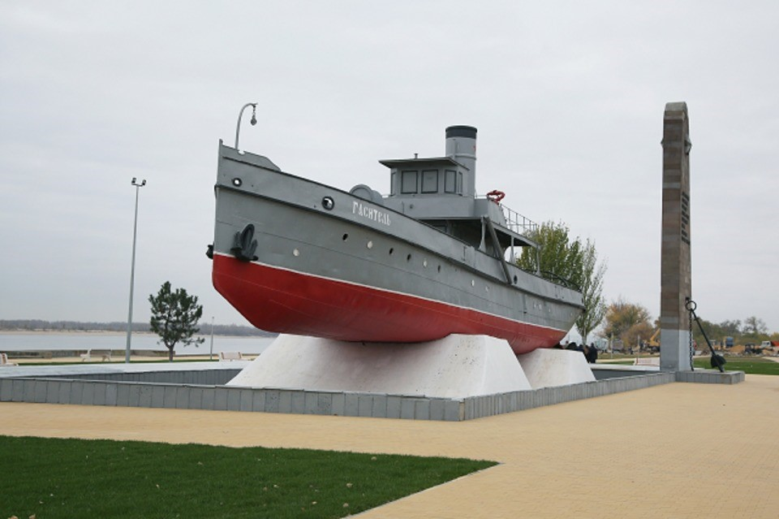
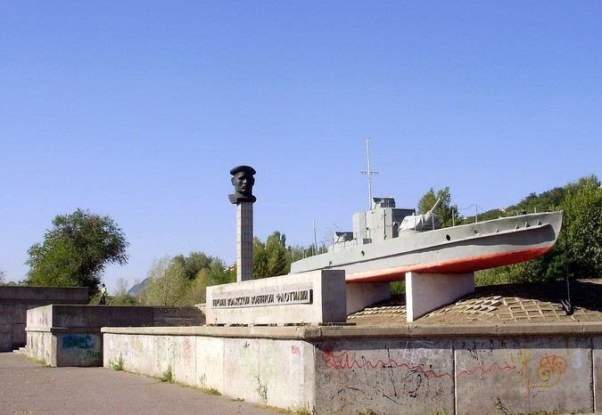

7 августа 1942 года
Источник: «Победа» от 2 февраля 2013 года.
Подвиг
7 августа совершил подвиг Владимир Землянский, командир 622-го штурмового авиационного полка.
Вечером этого дня майор В. Землянский в четвертый раз за день повел в атаку более 10 штурмовиков. Во время очередного захода на врага в районе Яблоневой балки самолет В. Землянского вспыхнул. Пилот направил горящую машину на скопление вражеских танков и автомобилей. Летчики услышали в наушниках его последние слова: «Прощайте, умираю за Родину!». В ноябре 1942 года мужественному офицеру было посмертно присвоено звание Героя Советского Союза.

Героическая флотилия
Золотыми буквами в летопись Великой Отечественной войны вписаны подвиги, совершенные военными моряками Волжской военной флотилии.
Волжская военная флотилия начала формироваться в октябре 1941 года. Командующим флотилией в начале 1942 года был назначен контр-адмирал Д.Д. Рогачев, в прошлом балтийский моряк, участник Великой Октябрьской Социалистической революции. К ноябрю 1942 года ее состав был доведен до 19 канонерских лодок, 29 бронекатеров, 62 катеров-тральщиков, 9 плавбатарей, 24 катеров ПВО и 25 полуглиссеров.
Когда началась битва за Сталинград, перед флотилией были поставлены следующие задачи: перевозить с левого на правый берег Волги людские резервы, оружие, боеприпасы, продовольствие защитникам города; поддерживать огнем части Красной Армии; эвакуировать раненых; срывать попытки врага по форсированию Волги; продолжать охранять речной путь; проводить траление вражеских мин.
Бойцы, проявляя мужество и героизм, сорвали замысел фашистов с ходу прорваться к тракторному заводу.
С первого же дня боев на северном участке, т.е. с 23 августа, северная группа кораблей под командованием капитана третьего ранга С.П. Лысенко стала поддерживать действия армейских частей. Первыми артиллерийский огонь открыли по фашистским войскам канонерские лодки «Чапаев» (командир старший лейтенант Н.И. Воронин) и «Усыскин» (командир капитан-лейтенант И.А. Кузнецов) и 7 бронекатеров.
В период, когда северная группа войск полковника Горохова вела тяжелые бои с противником, пробившимся к Волге, севернее тракторного завода, ожесточенные бои развернулись в южной части Сталинградского фронта. 4-я немецкая танковая армия стремилась прорваться к правому берегу Волги на участке Райгород-Красноармейск-Бекетовка. Ей противостояли 57-я и 64-я Армии. Им с 24 августа активную поддержку стали оказывать корабли 1-й и 2-й бригад Волжской военной флотилии.
25 августа канонерские лодки «Громов», «Щорс», «Руднев», помогая 15-й гвардейской стрелковой дивизии, вели артиллерийский огонь по противнику, наступавшему в районе Дубовый овраг - балка Песчаная и помогли приостановить продвижение фашистов на этом участке. Артиллеристы канонерской лодки «Руднев» (командир старший лейтенант Н.Я. Чистовский) в первом же бою огнем своих орудий уничтожили вражескую батарею, 6 танков и заставили отступить следовавшую за танками пехоту.
Воинским частям 62-й Армии и других армий, защищавшим Сталинград, постоянно требовались подкрепления, боеприпасы, продовольствие. Все это с левого на правый берег Волги доставляли под ружейно-пулеметным и артиллерийско-минометным огнем корабли Волжской военной флотилии и суда Сталинградского речного порта.
В своих воспоминаниях бывший командующий 62-й Армией В.И. Чуйков писал: О роли моряков этой флотилии, об их подвигах скажу кратко: если бы их не было, возможно, 62-Армия погибла бы без боеприпасов и без продовольствия и не выполнила бы своей задачи».
Вместе с моряками Волжской военной флотилии помощь защитникам города оказывали и речники Сталинградского порта.
Вряд ли кто не знает, пароход «Гаситель», экипаж которого, под командованием капитана П.В. Воробьева героически действовал в дни Сталинградского сражения.
В настоящее время легендарный пароход установлен на вечном приколе в устье реки Царицы.

27 июля 1942 года экипаж «Гасителя» отстоял подожженные во время бомбардировки баржи с бензином. В начале августа он ликвидировал под бомбардировкой крупный пожар на станции Сарепта. Экипаж судна неоднократно доставлял в осажденный город бойцов и боеприпасы, вывозил на левый берег Волги раненых, женщин и детей.
Когда наши войска 19 ноября 1942 года перешли в контрнаступление под Сталинградом, перед Волжской флотилией оставались прежние основные задачи. Но так как на реке наступал ледостав и усилилось огневое противодействие противника, выполнение этих боевых задач возлагалось главным образом на бронекатера.
Канонерские лодки «Чапаев», «Усыскин», находящиеся на левом берегу Волги, были включены в состав артиллерийской группы 62-й Армии. Они должны были вести огонь по заявкам армейских командиров.
О том, как действовали корабли флотилии в дни контрнаступления наших войск можно узнать из книги военного историка И.И. Локтионова «Волжская флотилия в Великой Отечественной войне».
Командир дивизиона бронекатеров капитан 3-го ранга А.И. Песков получил приказание перебросить с левого берега Волги на правый в 138-ю стрелковую дивизию генерал-майора И.И. Людникова новое пополнение воинов, боеприпасы и продовольствие. В ночь с 20 на 21 ноября бронекатера № 12,13, 61, приняв на борт 40 тонн снарядов, мин, патронов и других грузов, а также свыше 300 бойцов, направились к месту назначения. Противник вел по кораблям артиллерийский, минометный и пулеметный огонь. Некоторые снаряды и мины разрывались близ бортов бронекатеров. Каскады воды обрушивались на палубу, смывая с нее моряков и солдат. По прибытии к правому берегу менее чем за час были высажены люди, выгружены боеприпасы и продовольствие. Приняв на борт 263 раненых воинов, бронекатера взяли курс к левому берегу. Во время перехода они из своих орудий подавили 10 фашистских огневых точек и уничтожили склад боеприпасов.
На берегу реки Волги, недалеко от музея-панорамы «Сталинградская битва», будто бы на приколе, стоит небольшое судно: открытый всем ветрам, несет свою «вахту» бронекатер № 13. Несмотря на «несчастливое» число, бронекатер – со счастливой судьбой: ему не только выпало счастье пройти сквозь огонь Сталинградского сражения, но и предоставлена честь стать памятником, символом героизма, отваги и мужества моряков.

Бронекатер № 13 проекта 1125 был заложен в 1941 г., спущен на воду весной 1942 г., вступил в строй в июне 1942 г., с октября 1942 года входил в состав 1-го дивизиона бронекатеров 1-й бригады речных кораблей Волжской военной флотилии, которая с 24 июля 1942 года по распоряжению Ставки Верховного Главнокомандования была передана в оперативное подчинение Сталинградскому фронту. Бронекатер до 17 декабря 1942 г. (до полного ледостава на р. Волге), успешно выполнял боевые задания по перевозкам войск, вооружения, медикаментов, продовольствия, защищал переправу от воздушных налетов противника, подавлял огневые точки, конвоировал суда, защищая их от вражеской авиации.
Особую роль бронекатера Волжской военной флотилии сыграли, когда река Волга стала замерзать: «20 ноября, в день перехода войск Сталинградского фронта в контрнаступление, бронекатера № 12, 13 и 61 получили задание доставить пополнение, боеприпасы и продовольствие 138-й стрелковой дивизии полковника Ивана Ильича Людникова, прижатой к Волге на небольшом простреливаемом всеми боевыми средствами противника участке. В ночь на 21 ноября бронекатера, приняв на борт более 300 бойцов и до 40 тонн боеприпасов и других грузов, совершили переход вблизи занятого противником берега к пункту разгрузки, находившемуся в 150 метрах от переднего края. Под ожесточенным огнем гитлеровцев они в течение получаса высадили людей, выгрузили боеприпасы и продовольствие, приняли 263 раненых. Во время обратного рейса бронекатера, вступив в перестрелку с врагом, подавили 10 его огневых точек и взорвали склад боеприпасов».
Всего в Сталинградской битве участвовали 14 бронекатеров Волжской военной флотилии, из которых двенадцать единиц были проекта 1125 (однопушечные). Необходимо отметить мобильность бронекатеров, их способность укрываться в протоках Волги и Ахтубы, что делало их малоуязвимыми для авиации и артиллерии противника.
Ярким примером подвига бронекатеров Волжской военной флотилии может служить хроника военных событий от 14 сентября 1942 года.
«…В 10 ч. 40 мин., по сведениям разведотдела армии, немцы силой до двух полков пехоты и 60 танков наступали на завод «Баррикады». В 10 ч. 50 мин. по радио был передан приказ Северной группе кораблей – немедленно открыть огонь по району завода «Баррикады». Расход боеприпасов составил 200 снарядов и РС.
С 12 ч. 30 мин. до 12 ч. 40 мин. бронекатер № 13 вел огонь по селению Купоросное и рассеял группу пехоты противника, израсходовав 15 снарядов. Отмечено три попадания в блиндажи.
Бронекатер № 13 проекта 1125 был заложен в 1941 г., спущен на воду весной 1942 г., вступил в строй в июне 1942 г., с октября 1942 года входил в состав 1-го дивизиона бронекатеров 1-й бригады речных кораблей Волжской военной флотилии, которая с 24 июля 1942 года по распоряжению Ставки Верховного Главнокомандования была передана в оперативное подчинение Сталинградскому фронту. Бронекатер до 17 декабря 1942 г. (до полного ледостава на р. Волге), успешно выполнял боевые задания по перевозкам войск, вооружения, медикаментов, продовольствия, защищал переправу от воздушных налетов противника, подавлял огневые точки, конвоировал суда, защищая их от вражеской авиации.
В 13 ч. 10 мин. бронекатер № 14 выпустил 18 фугасных снарядов по немецким окопам и дзотам.
В 21 ч. 35 мин. бронекатер № 41 выходил на Волгу южнее поселка Рынок и дал два залпа реактивными снарядами по скоплению немецких танков и пехоты в районе Сухой Мечетки, юго-восточнее высоты 101,3…».
К 10 ноября 1942 г. на р. Волге начался ледостав. Уже 1 ноября 1942 г. был отдан приказ наркома ВМФ Николая Герасимовича Кузнецова о переводе большей части кораблей и судов Волжской флотилии в г. Гурьев. Однако в районе Сталинграда остались канонерские лодки «Усыскин» и «Чапаев», а также 12 бронекатеров. Они вмерзли в лед, но продолжали вести огонь по врагу: последний залп моряки флотилии дали 31 января 1943 года в 15 ч. 27 мин.
1 марта 1943 г. 1-й дивизион бронекатеров ВВФ за боевые заслуги в Сталинградской битве преобразован в 1-й гвардейский дивизион бронекатеров Волжской военной флотилии, командующий – капитан III ранга С. П. Лысенко.
За героизм, проявленный в период Сталинградской битвы, приказом наркома Военно-Морского Флота от 1 марта 1943 г. команде бронекатера № 13 присвоено гвардейское звание «Тринадцатый».
14 сентября 1943 г. перечислен в Днепровскую флотилию, в составе которой участвовал в боях на Припяти и Западном Буге, Белорусской и Берлинской наступательных операциях.
7 мая 1995 года в 15-00 на Набережном имени 62-й Армии прошла торжественная церемония открытия памятника «БК-13», с возложением гирлянд и цветов, с присутствием почетных гостей, тружеников волжских переправ и ветеранов флотилии.
Всего в период военных действий под Сталинградом корабли Волжской флотилии совместно с судами речного пароходства доставили для фронтов Сталинградского направления свыше 300 тысяч бойцов. Большое количество бронетехники, боеприпасов, продовольствия, эвакуировали до 300 тысяч жителей, 63 тысячи раненых. Им довелось совершить через Волгу 35400 рейсов.
За мужество и отвагу, проявленные в боях за Сталинград, свыше 300 моряков были награждены орденами и медалями. Канонерские лодки «Усыкин», «Чапаев» стали Краснознаменными. 1-й и 2-й дивизионы бронекатеров были удостоены гвардейского звания.
Кроме Волжской военной флотилии, в битве за Сталинград отважно сражались с фашистскими захватчиками в составе морских бригад, стрелковых частей и соединений Красной Армии свыше 100 тысяч морских пехотинцев.
Уже в июле 1942 года на Сталинградское направление прибыли 66-я и 154 –я отдельные морские стрелковые бригады.
На каких бы участках у Сталинграда ни сражались военные моряки, они всегда проявляли храбрость и отвагу и с честью выполняли свой долг перед Родиной.